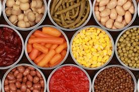

CONHECENDO OS ALIMENTOS: DO NATURAL AOS INDUSTRIALIZADOS

<Os alimentos processados são produtos que passaram por modificações industriais para aumentar sua durabilidade, melhorar o sabor ou facilitar o consumo. Durante o processamento, são adicionados ingredientes como sal, açúcar, óleo, conservantes e outros aditivos. Esses alimentos são produzidos a partir de alimentos naturais, mas sofrem alterações antes de chegar ao consumidor. Alguns exemplos são pão, queijo, molho de tomate, frutas em calda, legumes em conserva e alimentos enlatados. O consumo de alimentos processados pode ser prático no dia a dia, porém é importante ter equilíbrio, pois o excesso pode trazer prejuízos à saúde devido à grande quantidade de sódio, açúcar e gordura presente em alguns produtos. • Nos alimentos processados, são adicionados ingredientes para melhorar o sabor, conservar por mais tempo e facilitar a produção. Os principais ingredientes adicionados são: • Sal • Açúcar • Óleo ou gordura • Conservantes • Corantes • Aromatizantes • Temperos industrializados
>Esses ingredientes ajudam os alimentos a durar mais e ficar mais saborosos, mas o consumo em excesso pode fazer mal à saúde. A diferença entre alimentos in natura e alimentos processados está na forma como eles são preparados antes do consumo. Os alimentos in natura são retirados diretamente da natureza e não passam por processos industriais. Eles não possuem ingredientes adicionados. Frutas, verduras, ovos e leite são exemplos desse tipo de alimento.
Já os alimentos processados passam por modificações industriais e recebem ingredientes como sal, açúcar, óleo ou conservantes para aumentar a durabilidade e melhorar o sabor. Pão, queijo e alimentos enlatados são exemplos de alimentos processados.
Em resumo, os alimentos in natura são mais naturais e saudáveis, enquanto os processados sofrem alterações antes de chegar ao alimentos ultraprocessados são produtos feitos principalmente pela indústria e passam por muitos processos de fabricação. Eles possuem grande quantidade de ingredientes artificiais, como corantes, conservantes, aromatizantes, adoçantes e realçadores de sabor. Geralmente, esses alimentos têm muito açúcar, gordura e sódio.
Site 7 ano "b" | cief
disciplina: Educação Digital